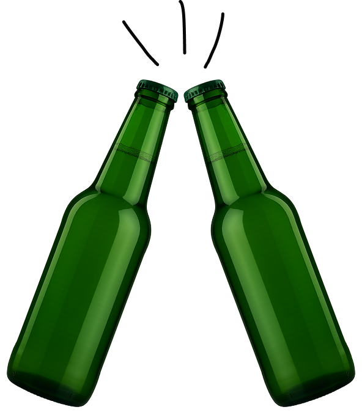

СКУФ

а це часом не ти?
Скуф загублений чоловік?
Скуф — архетип сучасного загубленого чоловіка, часто віком від двадцяти п’яти до сорока років. Це своєрідний антипод успішного, вмотивованого і соціально активного чоловіка. Часто він перебуває в оточенні пива, сигарет і ноутбука з відкритим серіалом.
